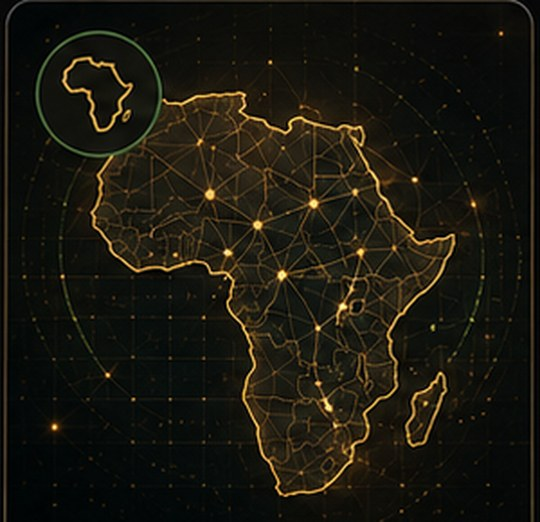
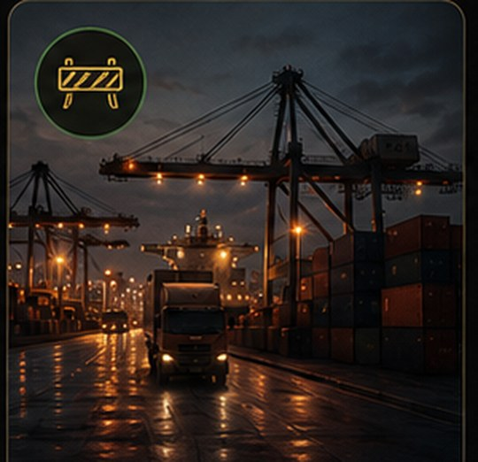
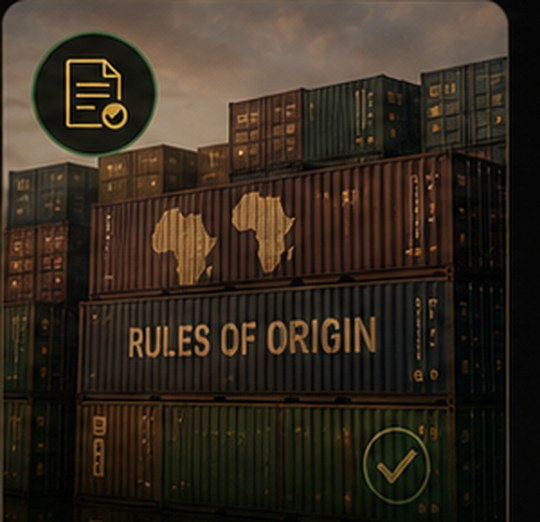
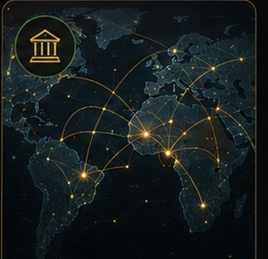
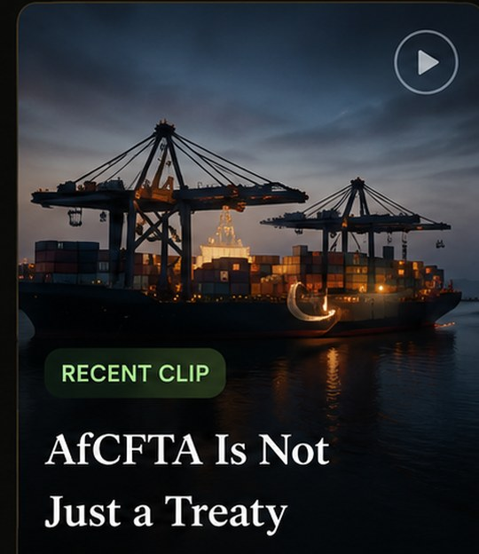
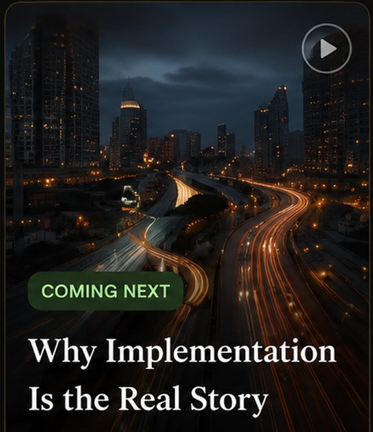
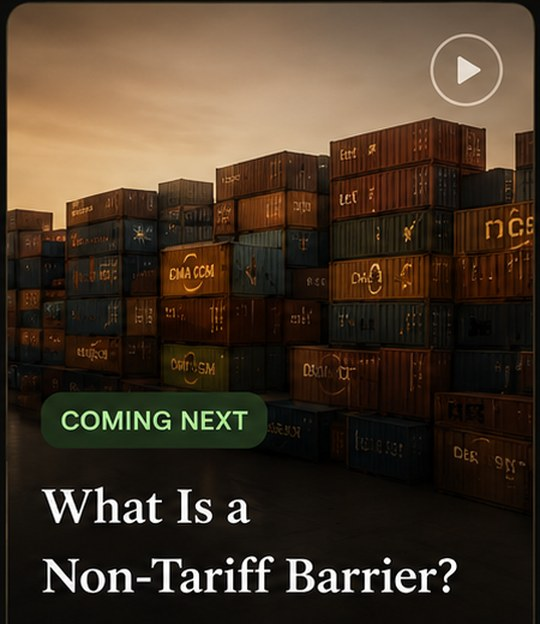

Public trade watch
AfCFTA
Implementation Watch
Tracking the implementation gap between Africa’s continental trade promise and real business readiness.
Implementation lanes
What this watch tracks
AfCFTA is tracked through the practical systems that decide whether businesses can actually use the agreement: tariffs, rules, standards, payments, logistics, institutions, and readiness evidence.
TariffsRules of OriginStandardsNTBsPayments / PAPSSLogisticsTrade DataMSME ReadinessDiaspora CapitalEventsProcurementOpen Questions
Research documents
Documents behind the watch
Reference pages for the sources, findings, questions, and verification checks behind the AfCFTA watch.
Source Guide
A public-facing source guide for the records used to frame this watch.
View sources →Findings Register
Key findings are separated from open questions so readers can see what is known and what still needs verification.
View findings →Open Questions
Open implementation questions remain visible until stronger public evidence is available.
View questions →Tool and Portal Review
Product-level checks require separate verification before they are used for business advice.
View tool review →AfCFTA
Implementation
WatchIssue 001
Implementation
WatchIssue 001
Latest report
AfCFTA Is an Implementation Problem Before It Is a Profit Opportunity
A source-backed assessment of where AfCFTA stands in practice, where bottlenecks remain, and what must be verified for businesses and economies to benefit.
Read Issue 001 →Trade Friction Watch
Signals that can slow trade across borders
These are watch priorities for readers, not a formal severity ranking.
Border Delays
Persistent clearance and processing delays.
Watch priority: HighAd Hoc Fees
Unofficial payments increase costs.
Watch priority: HighDocumentation Burdens
Excess forms and redundant requests.
Watch priority: MediumStandards
Compliance complexity limits market access.
Watch priority: MediumPayment Friction
Fragmented rails slow cross-border payments.
Watch priority: HighInformation Opacity
Lack of clear, timely, actionable information.
Watch priority: HighExplainer Library
Evergreen AfCFTA explainers
Five reader guides explain the trade concepts behind the watch.

What Is AfCFTA?
A continental trade implementation system, not just a treaty.
Read explainer →
What Is a Non-Tariff Barrier?
The friction that can block trade after tariff reduction.
Read explainer →
Why Rules of Origin Decide Who Benefits
A tariff benefit only matters if the product qualifies.
Read explainer →Why Standards and Certification Matter
Standards are market-access infrastructure.
Read explainer →
Why PAPSS Matters for African Trade
Payments are part of trade implementation.
Read explainer →Short-form education
Video production queue
Video posts will be produced later. For now, this page records the planned topics and keeps the written materials live.

Planned videoAfCFTA Is Not Just a Treaty
Topic planned

Planned videoWhy Implementation Is the Real Story
Topic planned

Planned videoWhat Is a Non-Tariff Barrier?
Topic planned
Videos will be created later. View the video topic plan →
Open Questions
We will not turn unclear implementation details into confident claims.
Which countries are actively applying AfCFTA tariff preferences?
Which product categories have clear rules-of-origin pathways?
Which NTB categories recur most often?
Which PAPSS countries, banks, and payment providers are live?
Which official tools are usable for product-level checks?
Issue 001 guide
Read the public Issue 001 document
Main signal
AfCFTA should be judged by implementation readiness, not by headlines alone.
Tools and portal checks
Product-level tariff and eligibility checks require separate verification before business use.
Reader action
Start with the public watch, then request a briefing only when a specific business or research question is ready.
Follow the Watch
Follow the AfCFTA Implementation Watch
Tracking trade policy, market readiness, standards, payments, non-tariff barriers, logistics, and diaspora capital implications across Africa.